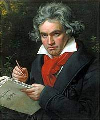

ベートーベンの生涯

1.簡単な紹介
full name: ルートヴィヒ・ヴァン・ベートーベン
profession: 作曲家、ピアニスト
birth place: ボン（ドイツ）
- 古典派音楽の集大成かつロマン派音楽の先駆とされている
2.ベートーベンの少年時代
1770年12月16日頃、神聖ローマ帝国ケルン大司教領のボンにおいて、音楽家の父ヨハン・ヴァン・ベートーヴェンと、宮廷料理人の娘である母マリア・マグダレーナ・ケーヴェリヒ・ライムの第二子として生まれる。マリーアは7人の子供を産んだが成人したのは3人のみで、長男のルートヴィヒ・マリーア（1769年4月2日に洗礼）が生誕6日後に死去したため、その3人の中ではルートヴィヒは長男だった。他の2人は、カスパール・アントン・カールとニコラウス・ヨハンである。
ベートーヴェン一家は、ボンのケルン選帝侯宮廷の優れた歌手かつ鍵盤楽器奏者として知られ、楽長として宮廷の音楽家たちを率いていたベートーヴェンと同姓同名の祖父ルートヴィヒ・ヴァン・ベートーヴェンの援助により生計を立てていた。幼少のベートーヴェンも祖父ルートヴィヒを敬愛しており、同時代人からも尊敬されていた[3]。敬愛していた証拠として、ベートーヴェンは祖父の肖像画を何年間も自身の部屋に飾っている。
父ヨハンも宮廷歌手（テノール）であった。しかし、元来無類の酒好きであったために収入は途絶えがちだった。1773年12月24日に祖父が亡くなった後ある程度の遺産を相続したが、1784年までにほとんど浪費してしまった。1774年頃よりベートーヴェンは父からその才能をあてにされ、虐待とも言えるほどの苛烈を極める音楽のスパルタ教育を受けたことから、一時は音楽そのものに対して強い嫌悪感すら抱くようにまでなってしまった。1778年にはケルンでの演奏会に出演し、デビューを果たす。
1782年からはベートーヴェンにとって最初の重要な教師とされるクリスティアン・ゴットロープ・ネーフェに師事した。そして、ネーフェは、当時まだ作品の大半が知られていなかったJ.S.バッハの作品を与え、「平均律クラヴィーア曲集」などを弾かせている。また、同年に作曲した『ドレスラーの行進曲による9つの変奏曲』が出版されている。（これは、ベートーヴェンにとって初めての出版作品である）
1787年春、16歳のベートーヴェンはウィーンに旅し、かねてから憧れを抱いていたモーツァルトを訪問した。この時代のウィーンは音楽が盛んで、ヨーロッパ中から音楽家が集まり、貴族、外交団、ブルジョアジーなどが音楽家たちを支援していた。カール・チェルニーの伝える所によれば、ベートーヴェンはこの地でモーツァルトの即興演奏を聴き、彼の演奏を「すばらしいが、ムラがあり、ノン・レガート」と語ったという。また、この際の旅費を負担したのは、ヴァルトシュタイン伯爵であるとフランツ・ヴェーゲラーは述べているが、実際はボンでのベートーヴェンの最大の支援者であるマクシミリアン・フランツであるとされている[10]。
ウィーンで2週間程滞在した頃、ベートーヴェンは母親の危篤の報を受けてボンに戻った。母は二か月後の7月に死没した。（肺結核）一方で父親のアルコール依存症とうつ病は悪化していった。
1789年には、家計を支えられるように父親の年収の半分を直接自分に渡してほしいという旨を、父親が無給になった場合にはどこかの村に追放するという条件付きで、選帝侯に嘆願している。しかし、このことを恥じた父ヨハンは自身の給料の半分を年4回の分割で、自らベートーヴェンに渡した[13]。そして、仕事ができなくなった父に代わっていくつもの仕事を掛け持ちして家計を支え、養育と学校教育が必要な2人の弟たちの世話に追われる苦悩の日々を過ごした。
3.ベートーベンの作曲人生
1790年12月には、イギリスに行く途中で当時絶頂期だったハイドンと興行主ザーロモンがボンに立ち寄り、また1792年7月にロンドンからウィーンに戻る途中でも、ボンに立ち寄っている。どちらの時期かは定かでないが、その際ベートーヴェンはハイドンに自身のカンタータ、『皇帝ヨーゼフ2世の葬送カンタータ』WoO.87か『皇帝レオポルト2世の即位のためのカンタータ』WoO.88のどちらかを見せている。ハイドンはベートーヴェンの才能を認め、1792年7月には弟子としてウィーンに来れるよう約束が交わされた。
1792年11月2日の早朝に出発し、フランクフルト、ニュルンベルク、レーゲンスブルク、パッサウ、リンツ等を経由しながら1週間かけてウィーンに到着した。そして、ベートーヴェンはこれ以降、二度とボンに戻ることはなかった。
当時、ウィーンではフランス革命の影響を受けて報道の自由が規制され、革命支持者に対する措置が厳しくなっており、そのことは1794年にボンに送った手紙の内容からもうかがえる。一方で、ウィーンの貴族のサロンは若い音楽家たちの活躍する場となっており、公開コンサートの数も増えていっていた。ウィーンに到着した際、ベートーヴェンは貴族たちから演奏の招待を多く受けたが、そのほとんどを無視しており、これらに対し怒りの感情すら覚えている。一方で、ベートーヴェンはこの地で多くの後援者を得ることになる[22]。後援者の1人として挙げられるカール・リヒノフスキー侯爵家は気前がよく、イタリア弦楽器一式と600フローリンの年金を与えており、ベートーヴェンは彼の所有する家に下宿している。
1792年12月18日には父ヨハンが死去したが、ベートーヴェンは彼の葬儀のためにボンに戻ることはなく、葬儀はヴェーゲラーたちが済ました。1792年11月～1794年1月までの日記には、買い物の支出の記録やハイドンのもとでのレッスン料の記録は残っているが、父ヨハンの葬儀に関する記録は全く残っていない。1793年4月頃には、選帝侯に宛てて父親の引退後に受け取っていた給料の半分を更新してもらうよう手紙を書いており、5月にはボンから支給されていた奨学金に上乗せして、この金額が払われた[14]。これらの手配は、フランツ・アントン・リースによって進められていた[14]。また、1794年～1796年に、ベートーヴェンはウィーンでヴェーゲラーとブロイニング家のローレンツと再び親交を結んでいる。
ハイドンに教えを乞うためにウィーンに来たベートーヴェンだったが、ハイドンが1791-92年、1794-95年の2回のイギリスの訪問にて成功を収め多忙を極めた事もあり、ベートーヴェンに作曲を教える時間はほとんどなかった[25]。そこで、1793年からハイドンには内緒でヨハン・シェンクに作曲を師事し、彼の下でフックスの『パルナッソス山への階梯』を基に対位法を学び、対位法課題を添削してもらった。そして、ベートーヴェンは更に1794年から当時高名な理論家であったヨハン・ゲオルク・アルブレヒツベルガーの下で対位法を学んでいる[26]。これらの対位法の成果は、この頃の作品と考えられているフーガ ハ長調 WoO215や、弦楽四重奏曲のための初期の断片的なフーガに端的に表れている。
ベートーヴェンはウィーンに来てから徐々にに名声をあげていき、ウィーンに来てから4年が経った1796年の時点で既に同世代の中でも最も評価される作曲家となっている。これは1796年にヨハン・フェルディナント・フォン・シェーンフェルトが刊行した『ヴィーン・プラハ音楽芸術年報』の作曲家に対する寸評の項目において、ベートーヴェンをハイドンの次の位置に配置して評価していることからも分かる。ここではベートーヴェンを次のように評価している。
彼は演奏の稀にみる速さによって広く称賛されており、最も手強い困難な箇所をいとも簡単に習得してしまうことで驚きを与えている。すでに音楽の内なる聖域に入ってしまったようで、正確さ、感性、趣味において傑出している。～中略～ このような非常に偉大な天才が、その実をこれほど優れた大家たちの指導下に置いたとあれば、そもそも期待できないことなどあろうか！彼は既に数曲の美しいソナタを作曲している。その中で最も新しいものは、特に傑出したものと評価されている。
1796年初頭、ベートーヴェンはプラハ、ドレスデン、ライプツィヒ、ベルリンを旅行し、六か月間に及ぶ演奏会を行った。
20代後半頃より持病の難聴（原因については諸説あり、鉛中毒説が通説）が徐々に悪化。28歳の頃には最高度難聴者となる。音楽家として聴覚を失うという死にも等しい絶望感から、1802年には『ハイリゲンシュタットの遺書』をしたためて自殺も考えた。しかし、彼自身の芸術（音楽）への強い情熱をもってこの苦悩を乗り越え、ふたたび生きる意欲を得て新たな芸術の道へと進んでいくことになる。
1804年に交響曲第3番を発表したのを皮切りに、その後10年間にわたって中期を代表する作品が書かれ、ベートーヴェンにとっての傑作の森（ロマン・ロランによる表現）と呼ばれる時期となる。その後、ピアニスト兼作曲家から、完全に作曲専業へと移った。
4.ベートーベンの晩年
40歳頃（晩年の約15年）には全聾[要出典]となり、さらに神経性とされる持病の腹痛や下痢にも苦しめられた。加えて、たびたび非行に走ったり自殺未遂を起こしたりするなどした甥・カールの後見人として苦悩するなど、一時作曲が停滞した。しかし、そうした苦悩の中で書き上げた交響曲第9番や『ミサ・ソレムニス』といった大作、ピアノ・ソナタや弦楽四重奏曲等の作品群は彼の辿り着いた境地の未曾有の高さを示すものであった。
1826年12月に肺炎を患ったことに加え、黄疸も併発するなど病状が急激に悪化し、以後は病臥に伏す。翌1827年3月23日には死期を悟って遺書をしたためた。病床の中で10番目の交響曲に着手するも、未完成のまま同年3月26日、肝硬変のため波乱に満ちた生涯を閉じた。享年58（満56歳没）。その葬儀には2万人もの人々が参列するという異例のものとなった。この葬儀には、シューベルト、ヨーゼフ・マイゼダーも参列している。